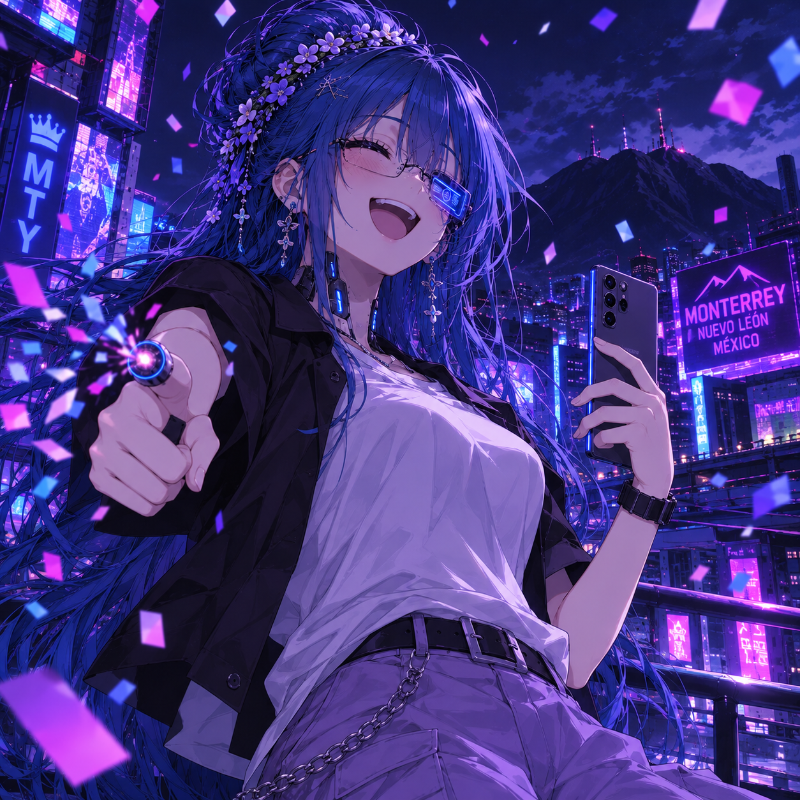

Jenifer Sokolova
especie: Homo sapiens sapiens
estado civil: en relación (comprometida solamente porque Kirai le regalo un anillo que se veia bien en ella)
relaciones: Yerik Sokolov (padre), Neva Sokolova (madre), Hana Sokolova (hermana mayor), Kirai Kojin Kodoku Loredo (novio), Katsuki (primo), Kojin Kodoku (suegro-fallecido), Manda Charlie Loredo Hernandez (suegra-fallecida)
pelo: azul
ojos: azul oscuro
piel: clara
cumpleaños: 20 de marzo del 2200
edad: 16-17 años
¿neuro divergencia?: no
IQ: 120-130
estatura: 1.71m
peso: 46-47kg (peso poco sano)
nacionalidad: Japonesa y Rusa (mestiza)
orientación sexual: Bisexual
personalidad: tomboy, algo ruda y sobre todo, cariñosa con Kirai... Apesar de ser una desmadrosa espontanea
Jen conoce a Kirai desde los 3 años, porque la madre de ambos eran amigas desde la prepa, aunque Kirai sea algo introvertido (proyectada), pudieron llevarse bien, aunque Kirai termino olvidandola, si le provoco una leve depresión, pudo seguir con su vida, en la primaria muchas chicas se burlaban de ella al tener el pelo azul, pero los chicos no se burlaban, así que convivio con los chicos siendo la razón actual de que sea igual de vale ***** que nosotros
"¿qué se supone es a quien voy a hablarla?¿otros seres de otro universo qué ven nuestro mundo cómo una historia? no creo que de verdad existan, apenas se que si existe algo así como Dios... Aunque según Kirai no cree en Dios"
